Префектура Сидзуока · Минами-Идзу · где остановиться
Izu Cliff House: стеклянный дом 1960-х на скале над Тихим океаном
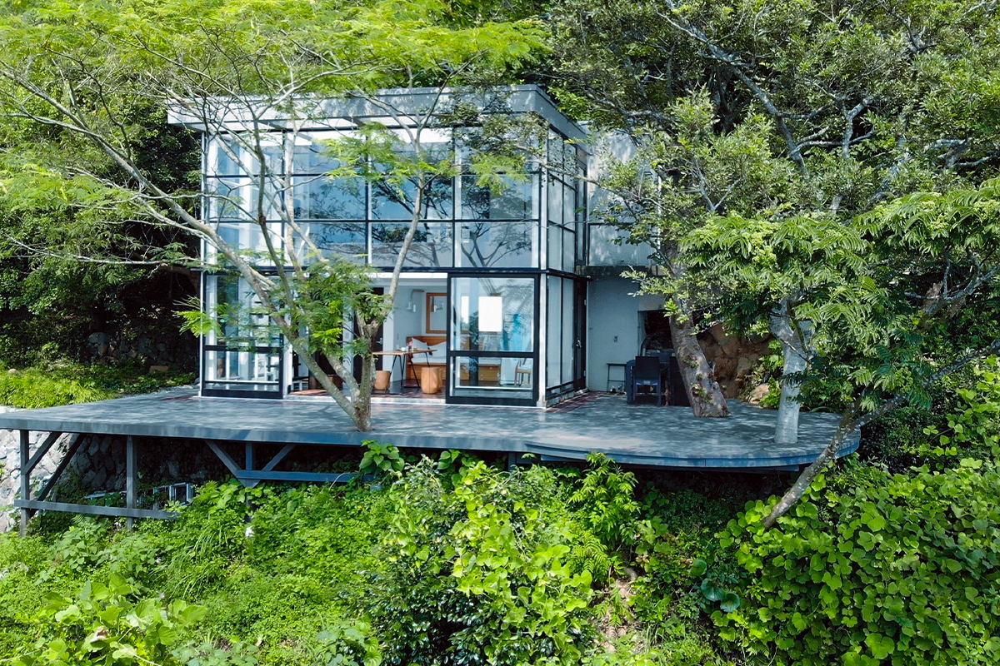
На самом юге полуострова Идзу, на скале над Тихим океаном, стоит маленький стеклянный дом. Его построили в 1960-х годах, потом забыли в лесу, а затем вернули к жизни и стали сдавать целиком одной компании гостей.
Место
Дом, который десять лет спал в лесу
Юг префектуры Сидзуока известен тихими уголками и видами, которые обошло стороной массовое строительство. Минами-Идзу, посёлок на самой южной оконечности полуострова Идзу, называют «японской верандой» и самым близким к Токио глухим краем: от центра столицы сюда около двух с половиной часов на поезде.
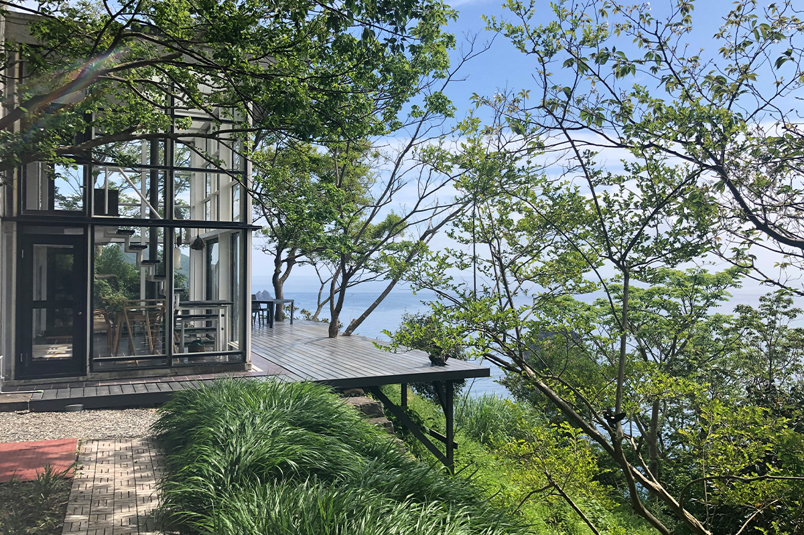
В 1960-х годах здесь задумали модернистский дом супруги, физик и специалистка по французской литературе. Через полвека после постройки дом на десять лет остался без хозяев и превратился в руины. Вернуть его к жизни взялась компания New Heritage, которая по всей Японии даёт новую жизнь старым зданиям, чтобы красивые места не пустели вместе с деревнями.
«Вернее будет сказать, что дом десять лет спал в лесу. Когда мы пробрались к нему сквозь заросли, он весь был оплетён плющом, природа его просто поглотила. Руины, но красивые, прямо как замок Лапута. Потом мы два с половиной года восстанавливали его, стараясь как можно точнее вернуть первоначальный облик»
глава компании New Heritage
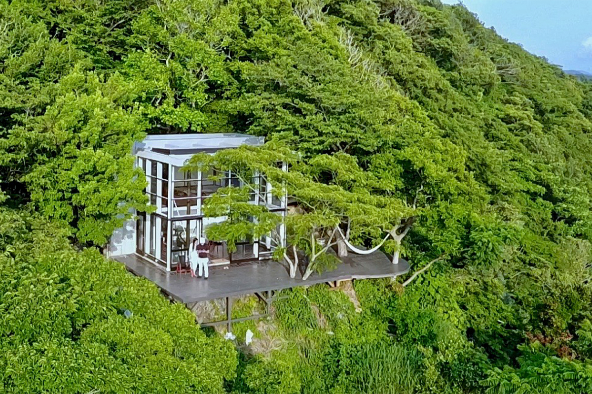
Izu Cliff House стоит на скале прямо над Тихим океаном, в окружении леса и морских видов, какие бывают только на Идзу. Вечером солнце садится в океан, и конец каждого дня проходит прямо у вас на глазах. Сам дом из бетона и стекла выглядит строго, почти безлико, и как раз на фоне деревьев и моря в нём чувствуется своя история.
Здесь слышно то, что в городе почти не услышишь: шум волн, птиц, шелест листьев. А видно только вулканические скалы, океан, необитаемые острова, небо, птиц, полевые цветы и деревья. До ближайшего соседнего дома около километра. Объяснение простое: место находится в охраняемой зоне национального парка, где строить больше нельзя. В поле зрения нет ни одного рукотворного предмета, только огромная панорама.
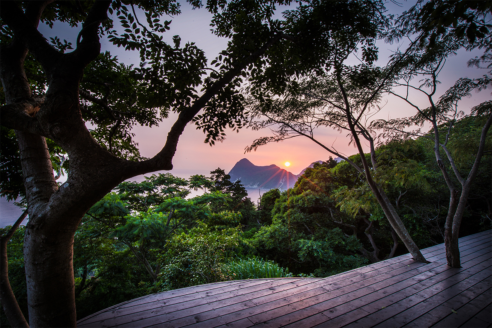
Отдых
Роскошь ничего не делать
Южный Идзу популярен у туристов. Славу укромного пляжа получил Хиридзо, до которого непросто добраться, а кроме него вокруг много красивых пляжей и живописных мест. Можно плавать на каяке, заниматься сёрфингом, ходить в походы. Но если расписать отпуск по часам, он легко превращается в суету.
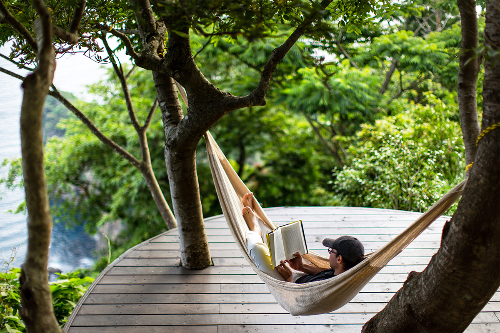
В Izu Cliff House время течёт медленно. Можно читать, глядя на море, можно валяться и разговаривать обо всём на свете, а когда проголодаетесь, устроить барбекю из местных морепродуктов и овощей. Главная роскошь здесь в том, чтобы ничего не делать посреди этого вида.
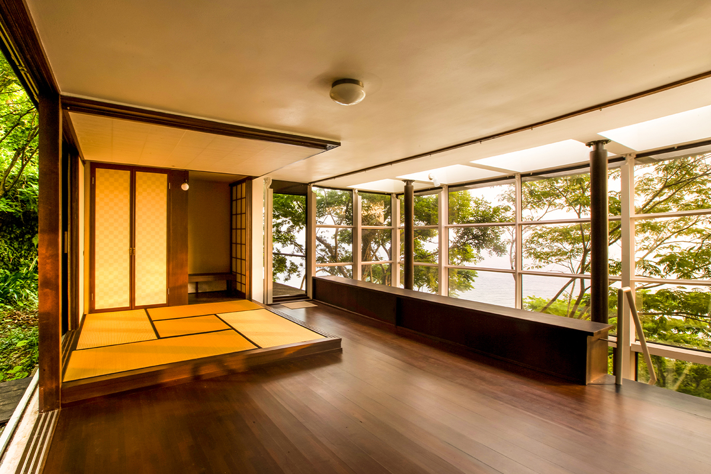
Мебель в доме подобрана так, чтобы дерево чувствовалось даже внутри. Дневную кровать из цельного камфорного дерева сделал местный мастер по дереву: стоит на неё сесть, и чувствуется запах камфорного масла. Подушки на ней набиты вручную хлопком, так что спать здесь тоже удобно. Зеркало того же мастера отражает вид на океан. Табурет из кипариса хиноки, который служит и кофейным столиком, сделал храмовый плотник из префектуры Окаяма.
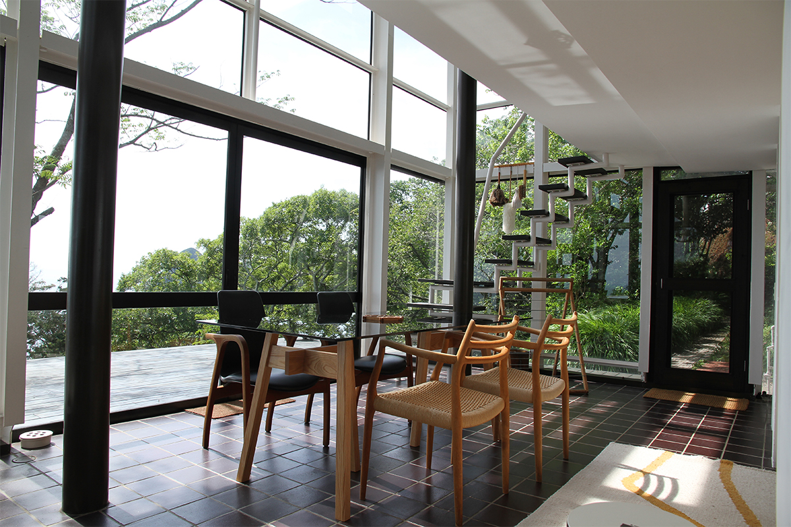
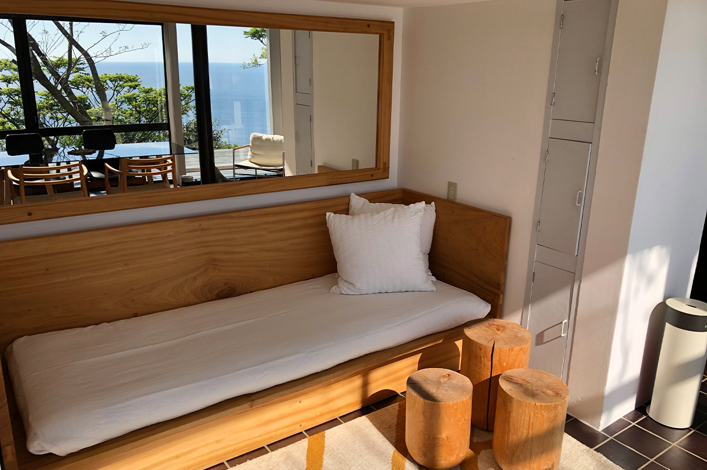
Деревянная терраса здесь больше, чем весь первый этаж дома. На участке сами по себе растут 13 горных вишен, а на террасе цветёт вишня сомэй-ёсино. В сезон цветения окрестные холмы окутывает розовая дымка.
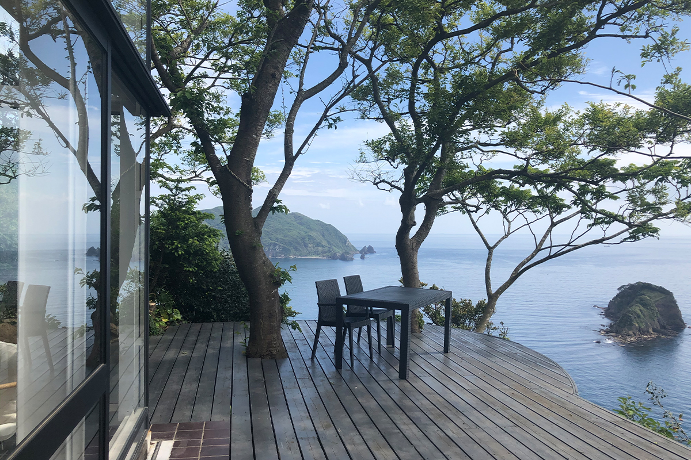
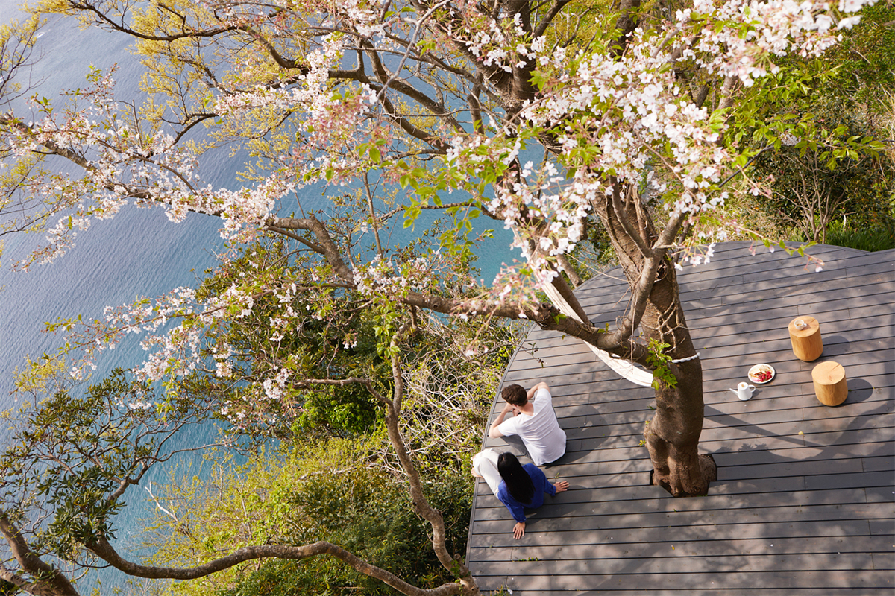
Услуги
Барбекю, массаж и лодка к тайным местам
Чтобы отдых был ещё богаче, дом предлагает дополнительные услуги. Можно заказать доставку еды из овощей собственного огорода и соков холодного отжима, массаж Эсален с видом на море и йогу. Можно взять напрокат набор для барбекю и приготовить местные морепродукты и овощи под крафтовое пиво с Идзу.
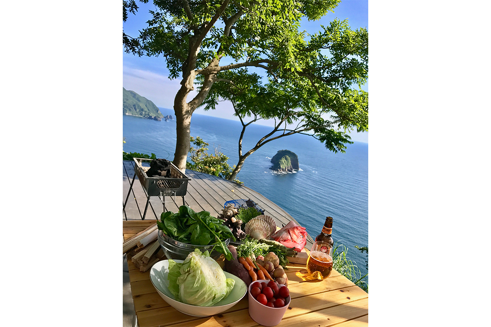
Только летом ловцы лангустов исэ-эби из соседней деревни Ихама проводят частные экскурсии: везут гостей на лодке к морю под скалой и к необитаемому острову.
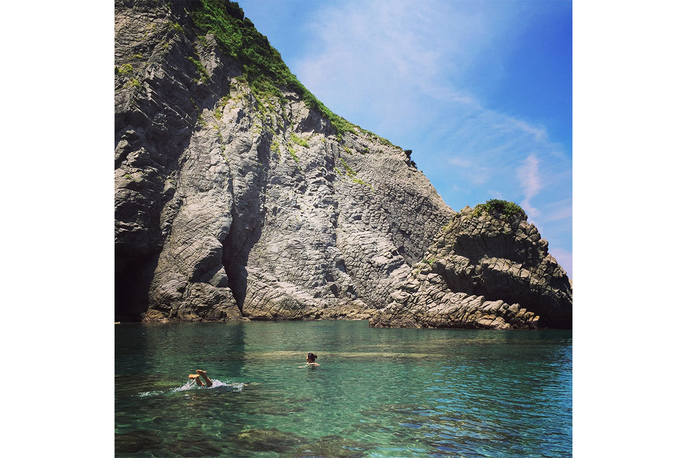
Смотреть на плывущие облака, на небо, полное звёзд, на вид, который меняется каждую минуту, и просто быть рядом с близкими людьми. Ради такого времени сюда и стоит приехать.
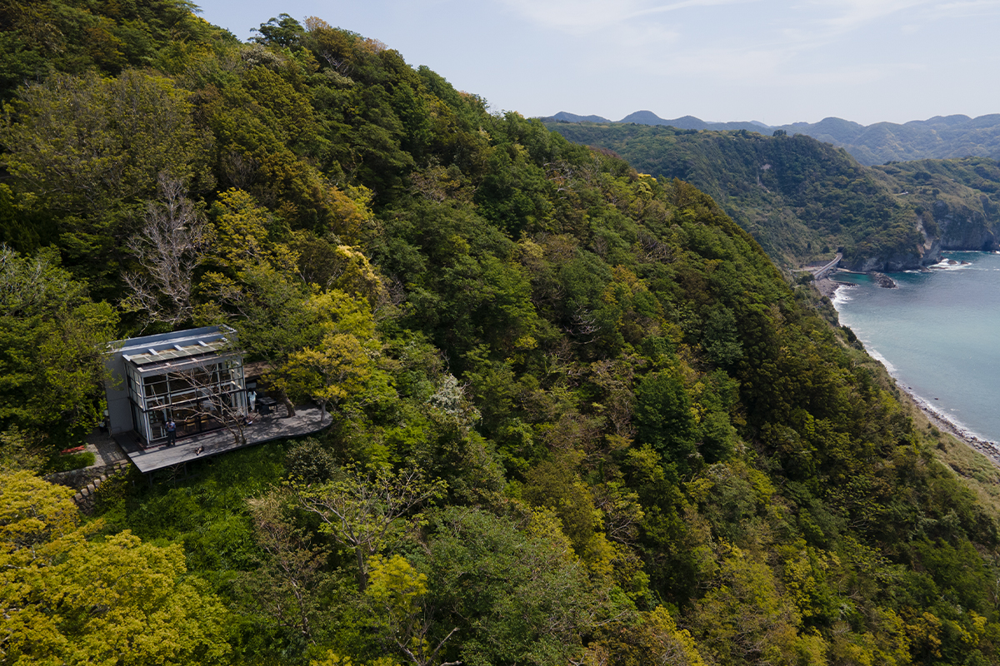
Izu Cliff House
- Адрес
- префектура Сидзуока, уезд Камо, Минами-Идзу, Ихама, 487
- Телефон
- +81 50-3116-0972
- Цены / Вход
- от 65 000 иен за дом (до 5 гостей)
- Заезд / выезд
- заезд 15:00–24:00, выезд до 11:00
- Как добраться
- на машине около 80 минут от развязки Цукигасэ скоростной дороги Идзу Дзюкан; на поезде до станции Идзукю-Симода, оттуда около 30 минут на такси